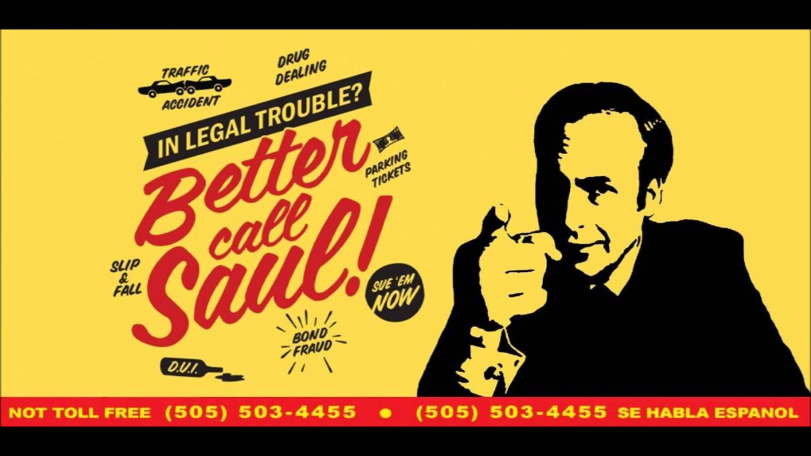

Web 1998 - Check this out
Introducing Jimmy McGill. You may know him better as Saul Goodman, Walter White's slippery, resourceful lawyer in Breaking Bad. When first we meet him it is a few years before he meets Walter White. He is a struggling lawyer in Albuquerque, New Mexico. He mostly defends small-time crooks and represents people in civil liability claims. His brother, Charles "Chuck" McGill, is a senior partner at a prestigious Albuquerque law firm but hasn't left his house for several months due to a strange affliction. Jimmy is supporting him through bringing him groceries and the like. Jimmy has a dark, pre-lawyer past, being a small-time fraudster in Chicago before moving to Albuquerque to start over and work with at his brother's firm. We also meet Mike Ehrmantraut, ex-cop now working as a toll booth attendant at the courthouse parking lot. We see how Jimmy and Mike's stories converge and how Jimmy slowly becomes the Saul Goodman we know from Breaking Bad.